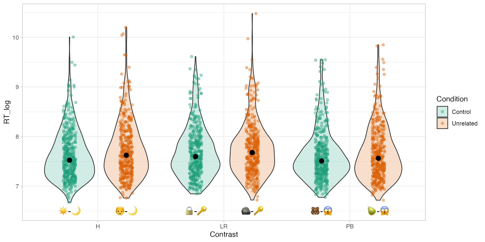

# A tibble: 2,338 × 11
Subject Procedure Version Contrast Item Condition WordL WordR Words.ACC
<fct> <chr> <chr> <chr> <dbl> <chr> <chr> <chr> <dbl>
1 1 TrialProc B2 PB 1 Unrelated HIT BUNCH 1
2 1 TrialProc A2 LR 1 Unrelated FALSE COLLECT 0
3 1 TrialProc A2 H 19 Unrelated HELLO BUY 1
4 1 TrialProc B2 PB 18 Control BACK FAT 1
5 1 TrialProc B1 H 8 Unrelated SALE SHIP 1
6 1 TrialProc B1 H 20 Control HIRE LISTEN 1
7 1 TrialProc B2 LR 3 Unrelated ORDER RAW 1
8 1 TrialProc A2 PB 13 Control PART WIT 1
9 1 TrialProc A2 LR 13 Control BEAM DAY 1
10 1 TrialProc B2 H 13 Control SERVANT MAZE 1
# ℹ 2,328 more rows
# ℹ 2 more variables: Words.RT <dbl>, RT_log <dbl>Research Methods in Developmental Linguistics
Week 5
Dr Stefano Coretta
University of Edinburgh
Ota 2009
From The KEY to the ROCK: Near-homophony in nonnative visual word recognition (10.1016/j.cognition.2008.12.007)
Visual semantic-relatedness paradigm.
- LOCK/ROCK ~ KEY.
Japanese data.
Ota 2009
Ota 2009
Figure 1: ?(caption)
Ota 2009
Ota 2009
Family: gaussian
Links: mu = identity; sigma = identity
Formula: RT_log ~ Condition * Contrast
Data: ota2009 (Number of observations: 2338)
Draws: 4 chains, each with iter = 2000; warmup = 1000; thin = 1;
total post-warmup draws = 4000
Population-Level Effects:
Estimate Est.Error l-90% CI u-90% CI Rhat
Intercept 7.63 0.03 7.58 7.67 1.00
ConditionUnrelated 0.10 0.04 0.04 0.17 1.00
ContrastLR 0.07 0.04 0.00 0.13 1.00
ContrastPB -0.01 0.04 -0.07 0.06 1.00
ConditionUnrelated:ContrastLR -0.04 0.05 -0.13 0.04 1.00
ConditionUnrelated:ContrastPB -0.06 0.06 -0.16 0.03 1.00
Bulk_ESS Tail_ESS
Intercept 2191 2592
ConditionUnrelated 2050 2662
ContrastLR 2202 2923
ContrastPB 2343 2754
ConditionUnrelated:ContrastLR 2091 2490
ConditionUnrelated:ContrastPB 2233 2739
Family Specific Parameters:
Estimate Est.Error l-90% CI u-90% CI Rhat Bulk_ESS Tail_ESS
sigma 0.54 0.01 0.52 0.55 1.00 3538 2687
Draws were sampled using sample(hmc). For each parameter, Bulk_ESS
and Tail_ESS are effective sample size measures, and Rhat is the potential
scale reduction factor on split chains (at convergence, Rhat = 1).Ota 2009
# A tibble: 24,000 × 5
# Groups: .variable [6]
.chain .iteration .draw .variable .value
<int> <int> <int> <chr> <dbl>
1 1 1 1 b_Intercept 7.63
2 1 2 2 b_Intercept 7.67
3 1 3 3 b_Intercept 7.65
4 1 4 4 b_Intercept 7.63
5 1 5 5 b_Intercept 7.62
6 1 6 6 b_Intercept 7.63
7 1 7 7 b_Intercept 7.61
8 1 8 8 b_Intercept 7.63
9 1 9 9 b_Intercept 7.61
10 1 10 10 b_Intercept 7.65
# ℹ 23,990 more rowsOta 2009

Figure 2: ?(caption)
Ota 2009
# A tibble: 4,000 × 10
.chain .iteration .draw b_Intercept b_ConditionUnrelated b_ContrastLR
<int> <int> <int> <dbl> <dbl> <dbl>
1 1 1 1 7.63 0.0946 0.0926
2 1 2 2 7.67 0.0718 0.0165
3 1 3 3 7.65 0.0671 0.0420
4 1 4 4 7.63 0.0931 0.107
5 1 5 5 7.62 0.0938 0.0597
6 1 6 6 7.63 0.0868 0.0467
7 1 7 7 7.61 0.113 0.0611
8 1 8 8 7.63 0.101 0.103
9 1 9 9 7.61 0.124 0.115
10 1 10 10 7.65 0.0903 0.00946
# ℹ 3,990 more rows
# ℹ 4 more variables: b_ContrastPB <dbl>,
# `b_ConditionUnrelated:ContrastLR` <dbl>,
# `b_ConditionUnrelated:ContrastPB` <dbl>, LR_cond_dif <dbl>Ota 2009

Figure 3: ?(caption)
Ota 2009: subject-level intercepts

Figure 4: ?(caption)
Ota 2009: subject-level intercepts
Ota 2009: subject-level intercepts
Family: gaussian
Links: mu = identity; sigma = identity
Formula: RT_log ~ Condition * Contrast + (1 | Subject)
Data: ota2009 (Number of observations: 2338)
Draws: 4 chains, each with iter = 2000; warmup = 1000; thin = 1;
total post-warmup draws = 4000
Group-Level Effects:
~Subject (Number of levels: 20)
Estimate Est.Error l-90% CI u-90% CI Rhat Bulk_ESS Tail_ESS
sd(Intercept) 0.35 0.06 0.27 0.46 1.00 505 1265
Population-Level Effects:
Estimate Est.Error l-90% CI u-90% CI Rhat
Intercept 7.62 0.08 7.49 7.76 1.02
ConditionUnrelated 0.10 0.03 0.05 0.15 1.00
ContrastLR 0.07 0.03 0.01 0.12 1.00
ContrastPB -0.01 0.03 -0.06 0.04 1.00
ConditionUnrelated:ContrastLR -0.04 0.04 -0.11 0.03 1.00
ConditionUnrelated:ContrastPB -0.06 0.04 -0.13 0.01 1.00
Bulk_ESS Tail_ESS
Intercept 353 585
ConditionUnrelated 1174 2050
ContrastLR 1448 1849
ContrastPB 1339 2098
ConditionUnrelated:ContrastLR 1229 1795
ConditionUnrelated:ContrastPB 1215 2128
Family Specific Parameters:
Estimate Est.Error l-90% CI u-90% CI Rhat Bulk_ESS Tail_ESS
sigma 0.43 0.01 0.42 0.44 1.00 1915 1945
Draws were sampled using sample(hmc). For each parameter, Bulk_ESS
and Tail_ESS are effective sample size measures, and Rhat is the potential
scale reduction factor on split chains (at convergence, Rhat = 1).Ota 2009: subject-level intercepts
ota_bm_2_sdraws <- ota_bm_2 %>%
spread_draws(`b_.*`, regex = TRUE) %>%
mutate(
LR_cond_dif = b_ConditionUnrelated + `b_ConditionUnrelated:ContrastLR`
)
ota_bm_2_sdraws# A tibble: 4,000 × 10
.chain .iteration .draw b_Intercept b_ConditionUnrelated b_ContrastLR
<int> <int> <int> <dbl> <dbl> <dbl>
1 1 1 1 7.66 0.0971 0.0785
2 1 2 2 7.58 0.101 0.0968
3 1 3 3 7.57 0.152 0.0925
4 1 4 4 7.63 0.0432 0.0506
5 1 5 5 7.51 0.129 0.0596
6 1 6 6 7.51 0.126 0.0570
7 1 7 7 7.54 0.0761 0.0712
8 1 8 8 7.52 0.104 0.0627
9 1 9 9 7.63 0.0985 0.0675
10 1 10 10 7.64 0.0951 0.108
# ℹ 3,990 more rows
# ℹ 4 more variables: b_ContrastPB <dbl>,
# `b_ConditionUnrelated:ContrastLR` <dbl>,
# `b_ConditionUnrelated:ContrastPB` <dbl>, LR_cond_dif <dbl>Ota 2009: subject-level intercepts

Figure 5: ?(caption)
Ota 2009: subject-level intercepts
# A tibble: 80,000 × 7
# Groups: Subject, term, .variable [20]
Subject term .chain .iteration .draw .variable .value
<int> <chr> <int> <int> <int> <chr> <dbl>
1 1 Intercept 1 1 1 r_Subject 0.0516
2 1 Intercept 1 2 2 r_Subject 0.124
3 1 Intercept 1 3 3 r_Subject 0.163
4 1 Intercept 1 4 4 r_Subject 0.144
5 1 Intercept 1 5 5 r_Subject 0.217
6 1 Intercept 1 6 6 r_Subject 0.232
7 1 Intercept 1 7 7 r_Subject 0.176
8 1 Intercept 1 8 8 r_Subject 0.238
9 1 Intercept 1 9 9 r_Subject 0.0935
10 1 Intercept 1 10 10 r_Subject 0.128
# ℹ 79,990 more rowsOta 2009: subject-level intercepts

Figure 6: ?(caption)
Ota 2009: subject-level intercepts
Estimate Est.Error Q5 Q95
Intercept 7.62620715 0.02768641 7.581469000 7.67360300
ConditionUnrelated 0.10378715 0.03906175 0.038101615 0.16722745
ContrastLR 0.06699781 0.03961116 0.002211786 0.13143145
ContrastPB -0.00571623 0.03891494 -0.069516300 0.05773055
ConditionUnrelated:ContrastLR -0.04495745 0.05472389 -0.133708800 0.04321842
ConditionUnrelated:ContrastPB -0.06209090 0.05630206 -0.155772200 0.03102230 Estimate Est.Error Q5 Q95
Intercept 7.621548095 0.08356667 7.48760400 7.75970050
ConditionUnrelated 0.099075849 0.03066349 0.04926464 0.15066960
ContrastLR 0.066087400 0.03089749 0.01438070 0.11694320
ContrastPB -0.006520887 0.03029936 -0.05636766 0.04348480
ConditionUnrelated:ContrastLR -0.038271657 0.04353769 -0.11158875 0.03248090
ConditionUnrelated:ContrastPB -0.060051002 0.04276476 -0.13151040 0.01025244Ota 2009: subject-level slopes

Figure 7: ?(caption)
Song 2020
From Second language users exhibit shallow morphological processing (10.1017/S0272263120000170).
English L1 and L2 participants (L2 participants are native speakers of Cantonese).
Lexical decision task: Is the word a real English word or not?
Each trial:
Prime: prolong (unrelated), unkind (constituent), kindness (non-constituent).
Target: unkindness ([un-kind]-ness, not un-[kind-ness]).
Data gathered: Reaction times and accuracy.
Song 2020
# A tibble: 1,950 × 11
Group ID List Target ACC RT logRT Critical_Filler Word_Nonword
<chr> <chr> <chr> <chr> <dbl> <dbl> <dbl> <chr> <chr>
1 L1 L1_01 A unawareness 1 603 6.40 Critical Word
2 L1 L1_01 A unholiness 1 739 6.61 Critical Word
3 L1 L1_01 A unhappiness 1 370 5.91 Critical Word
4 L1 L1_01 A unsharpness 1 821 6.71 Critical Word
5 L1 L1_01 A unripeness 0 1035 6.94 Critical Word
6 L1 L1_01 A undeniable 1 833 6.72 Critical Word
7 L1 L1_01 A unskillful 1 740 6.61 Critical Word
8 L1 L1_01 A unkindness 1 498 6.21 Critical Word
9 L1 L1_01 A unwariness 1 1133 7.03 Critical Word
10 L1 L1_01 A unclearness 1 513 6.24 Critical Word
# ℹ 1,940 more rows
# ℹ 2 more variables: Relation_type <chr>, Branching <chr>Song 2020
Song 2020
# A tibble: 10 × 5
term Estimate Est.Error Q5 Q95
<chr> <dbl> <dbl> <dbl> <dbl>
1 Intercept 1.80 0.217 1.46 2.16
2 GroupL2 -0.567 0.272 -1.02 -0.128
3 Relation_typeNonConstituent -0.621 0.282 -1.09 -0.158
4 Relation_typeUnrelated -0.800 0.275 -1.24 -0.350
5 BranchingRight 1.05 0.400 0.396 1.71
6 GroupL2:Relation_typeNonConstituent 0.464 0.361 -0.135 1.05
7 GroupL2:Relation_typeUnrelated 0.262 0.347 -0.305 0.826
8 GroupL2:BranchingRight 0.267 0.502 -0.552 1.10
9 Relation_typeUnrelated:BranchingRight 0.686 0.541 -0.201 1.56
10 GroupL2:Relation_typeUnrelated:BranchingRig… -0.146 0.684 -1.27 0.972Song 2020

Song 2020
Song 2020
Family: bernoulli
Links: mu = logit
Formula: ACC ~ Group * Relation_type * Branching + (1 | ID)
Data: shallow (Number of observations: 1950)
Draws: 4 chains, each with iter = 2000; warmup = 1000; thin = 1;
total post-warmup draws = 4000
Group-Level Effects:
~ID (Number of levels: 65)
Estimate Est.Error l-90% CI u-90% CI Rhat Bulk_ESS Tail_ESS
sd(Intercept) 0.79 0.12 0.61 1.01 1.00 1334 1953
Population-Level Effects:
Estimate
Intercept 1.99
GroupL2 -0.61
Relation_typeNonConstituent -0.66
Relation_typeUnrelated -0.86
BranchingRight 1.08
GroupL2:Relation_typeNonConstituent 0.50
GroupL2:Relation_typeUnrelated 0.27
GroupL2:BranchingRight 0.35
Relation_typeNonConstituent:BranchingRight -114426605.65
Relation_typeUnrelated:BranchingRight 0.76
GroupL2:Relation_typeNonConstituent:BranchingRight 22143688139.09
GroupL2:Relation_typeUnrelated:BranchingRight -0.18
Est.Error
Intercept 0.27
GroupL2 0.35
Relation_typeNonConstituent 0.29
Relation_typeUnrelated 0.29
BranchingRight 0.41
GroupL2:Relation_typeNonConstituent 0.37
GroupL2:Relation_typeUnrelated 0.37
GroupL2:BranchingRight 0.52
Relation_typeNonConstituent:BranchingRight 1090974143.96
Relation_typeUnrelated:BranchingRight 0.54
GroupL2:Relation_typeNonConstituent:BranchingRight 45565430280.81
GroupL2:Relation_typeUnrelated:BranchingRight 0.70
l-90% CI
Intercept 1.55
GroupL2 -1.19
Relation_typeNonConstituent -1.14
Relation_typeUnrelated -1.36
BranchingRight 0.43
GroupL2:Relation_typeNonConstituent -0.10
GroupL2:Relation_typeUnrelated -0.32
GroupL2:BranchingRight -0.52
Relation_typeNonConstituent:BranchingRight -2476557500.00
Relation_typeUnrelated:BranchingRight -0.12
GroupL2:Relation_typeNonConstituent:BranchingRight -2156151000.00
GroupL2:Relation_typeUnrelated:BranchingRight -1.35
u-90% CI Rhat
Intercept 2.43 1.00
GroupL2 -0.04 1.00
Relation_typeNonConstituent -0.20 1.00
Relation_typeUnrelated -0.40 1.00
BranchingRight 1.76 1.00
GroupL2:Relation_typeNonConstituent 1.13 1.00
GroupL2:Relation_typeUnrelated 0.88 1.00
GroupL2:BranchingRight 1.21 1.00
Relation_typeNonConstituent:BranchingRight 1463468500.00 1.84
Relation_typeUnrelated:BranchingRight 1.65 1.00
GroupL2:Relation_typeNonConstituent:BranchingRight 135947450000.00 3.25
GroupL2:Relation_typeUnrelated:BranchingRight 0.95 1.00
Bulk_ESS Tail_ESS
Intercept 1763 1795
GroupL2 1615 1738
Relation_typeNonConstituent 2381 2295
Relation_typeUnrelated 1927 2259
BranchingRight 2143 2246
GroupL2:Relation_typeNonConstituent 2186 2303
GroupL2:Relation_typeUnrelated 2143 2153
GroupL2:BranchingRight 2004 2019
Relation_typeNonConstituent:BranchingRight 6 12
Relation_typeUnrelated:BranchingRight 2037 2114
GroupL2:Relation_typeNonConstituent:BranchingRight 4 15
GroupL2:Relation_typeUnrelated:BranchingRight 1892 2012
Draws were sampled using sample(hmc). For each parameter, Bulk_ESS
and Tail_ESS are effective sample size measures, and Rhat is the potential
scale reduction factor on split chains (at convergence, Rhat = 1).Song 2020

Song 2020
Estimate
Intercept 1.8019761
GroupL2 -0.5670743
Relation_typeNonConstituent -0.6207528
Relation_typeUnrelated -0.7996187
BranchingRight 1.0483603
GroupL2:Relation_typeNonConstituent 0.4637915
GroupL2:Relation_typeUnrelated 0.2623161
GroupL2:BranchingRight 0.2667780
Relation_typeNonConstituent:BranchingRight 543274275165103.7500000
Relation_typeUnrelated:BranchingRight 0.6864681
GroupL2:Relation_typeNonConstituent:BranchingRight -398555596501661.3125000
GroupL2:Relation_typeUnrelated:BranchingRight -0.1459870
Est.Error
Intercept 0.2169616
GroupL2 0.2717929
Relation_typeNonConstituent 0.2818726
Relation_typeUnrelated 0.2753214
BranchingRight 0.3995391
GroupL2:Relation_typeNonConstituent 0.3607741
GroupL2:Relation_typeUnrelated 0.3473604
GroupL2:BranchingRight 0.5023164
Relation_typeNonConstituent:BranchingRight 1663438628768865.7500000
Relation_typeUnrelated:BranchingRight 0.5407214
GroupL2:Relation_typeNonConstituent:BranchingRight 863303839058927.6250000
GroupL2:Relation_typeUnrelated:BranchingRight 0.6844142
Q5
Intercept 1.4564655
GroupL2 -1.0188625
Relation_typeNonConstituent -1.0853420
Relation_typeUnrelated -1.2405150
BranchingRight 0.3959245
GroupL2:Relation_typeNonConstituent -0.1345275
GroupL2:Relation_typeUnrelated -0.3052880
GroupL2:BranchingRight -0.5520640
Relation_typeNonConstituent:BranchingRight -1818860500000000.0000000
Relation_typeUnrelated:BranchingRight -0.2010909
GroupL2:Relation_typeNonConstituent:BranchingRight -2355534500000000.0000000
GroupL2:Relation_typeUnrelated:BranchingRight -1.2725060
Q95
Intercept 2.1596770
GroupL2 -0.1278813
Relation_typeNonConstituent -0.1582347
Relation_typeUnrelated -0.3496822
BranchingRight 1.7056285
GroupL2:Relation_typeNonConstituent 1.0538005
GroupL2:Relation_typeUnrelated 0.8258839
GroupL2:BranchingRight 1.1035385
Relation_typeNonConstituent:BranchingRight 3714069000000000.0000000
Relation_typeUnrelated:BranchingRight 1.5638485
GroupL2:Relation_typeNonConstituent:BranchingRight 645896749999999.7500000
GroupL2:Relation_typeUnrelated:BranchingRight 0.9724854 Estimate
Intercept 1.9858870
GroupL2 -0.6073526
Relation_typeNonConstituent -0.6580701
Relation_typeUnrelated -0.8647917
BranchingRight 1.0755789
GroupL2:Relation_typeNonConstituent 0.4959971
GroupL2:Relation_typeUnrelated 0.2727230
GroupL2:BranchingRight 0.3455812
Relation_typeNonConstituent:BranchingRight -114426605.6484664
Relation_typeUnrelated:BranchingRight 0.7635728
GroupL2:Relation_typeNonConstituent:BranchingRight 22143688139.0905342
GroupL2:Relation_typeUnrelated:BranchingRight -0.1773523
Est.Error
Intercept 0.2680633
GroupL2 0.3463333
Relation_typeNonConstituent 0.2882147
Relation_typeUnrelated 0.2877647
BranchingRight 0.4081778
GroupL2:Relation_typeNonConstituent 0.3737823
GroupL2:Relation_typeUnrelated 0.3650077
GroupL2:BranchingRight 0.5180112
Relation_typeNonConstituent:BranchingRight 1090974143.9644828
Relation_typeUnrelated:BranchingRight 0.5447181
GroupL2:Relation_typeNonConstituent:BranchingRight 45565430280.8072739
GroupL2:Relation_typeUnrelated:BranchingRight 0.6998716
Q5
Intercept 1.5512645
GroupL2 -1.1916305
Relation_typeNonConstituent -1.1397845
Relation_typeUnrelated -1.3571985
BranchingRight 0.4276229
GroupL2:Relation_typeNonConstituent -0.1016538
GroupL2:Relation_typeUnrelated -0.3174186
GroupL2:BranchingRight -0.5158256
Relation_typeNonConstituent:BranchingRight -2476557499.9999981
Relation_typeUnrelated:BranchingRight -0.1197826
GroupL2:Relation_typeNonConstituent:BranchingRight -2156151000.0000000
GroupL2:Relation_typeUnrelated:BranchingRight -1.3491975
Q95
Intercept 2.4278655
GroupL2 -0.0379166
Relation_typeNonConstituent -0.1953609
Relation_typeUnrelated -0.3970380
BranchingRight 1.7552355
GroupL2:Relation_typeNonConstituent 1.1251290
GroupL2:Relation_typeUnrelated 0.8845447
GroupL2:BranchingRight 1.2135175
Relation_typeNonConstituent:BranchingRight 1463468500.0000000
Relation_typeUnrelated:BranchingRight 1.6526810
GroupL2:Relation_typeNonConstituent:BranchingRight 135947450000.0000000
GroupL2:Relation_typeUnrelated:BranchingRight 0.9486110